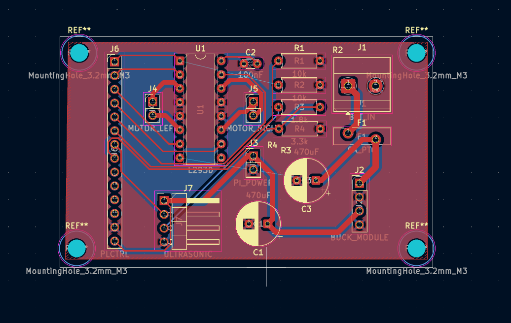
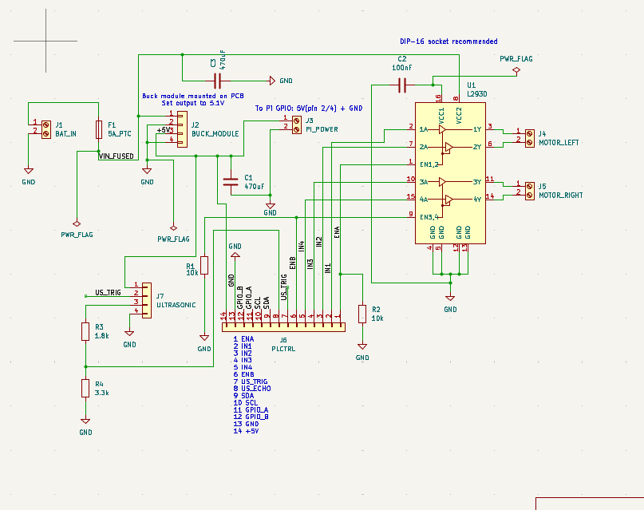

ROBOTICS CAPSTONE / HARDWARE LEAD
SCAMPER Rover.
A Raspberry Pi rover that demonstrates gesture control, colour tracking, and ultrasonic obstacle avoidance. I led the mechanical and electrical hardware work, from CAD and 3D printing to circuit assembly and PCB design.
MECHANICAL DESIGN
From LEGO to a printed chassis
The team started with a LEGO chassis to prototype the rover. I redesigned the structure in Fusion 360 and 3D printed the chassis, giving us a more stable platform for mounting the electronics and drive components.
ELECTRICAL DESIGN
What the PCB tests revealed
I designed a custom KiCad PCB to replace the breadboard wiring. The board passed electrical and layout checks. On the bench, it powered the Raspberry Pi and sensors, but the motor driver connections failed to operate the motors.
A new board would have needed another fabrication cycle. We moved the circuit to a solderable breadboard and powered the rover from its rechargeable battery for the final build.




TEAM DEMONSTRATION
The rover in motion
The team’s software used camera input to recognize hand gestures and send movement commands to the rover. This clip shows gesture control on the 3D-printed build.